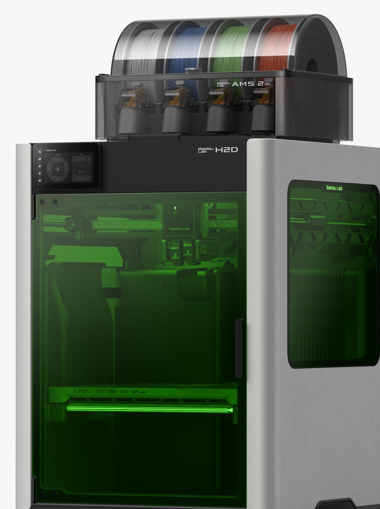

ProfissionalBambu Lab H2D Laser 10W
A H2D completa: impressora 3D de bico duplo + laser de 10 W para gravar e cortar + plotter de corte. Três máquinas em uma.
- Garantia de 1 ano do fabricante
- Original, com nota fiscal
- Envio para todo o Brasil · frete à parte
Para quem é a H2D Laser 10W
Quem vende personalizados: gravação em madeira, couro e metal, placas, brindes, adesivos e peças 3D, tudo no mesmo equipamento.
O que ela faz bem
- Laser de 10 W: grava detalhes finos e corta compensado de até 5 mm
- Plotter de corte com lâmina: vinil, adesivos, papel, couro fino
- Câmera de 8 MP no teto posiciona o trabalho pela imagem
- Segurança Classe 1 com a tampa fechada (janelas de proteção, detecção de chama, botão de emergência)
Limites
- Corte a laser limitado a 5 mm
- Gravação até 400 mm/s
- Laser exige ventilação (duto de 100 mm para fora)
É uma pequena oficina de personalizados dentro de uma caixa.
O que muda em relação ao modelo anterior
Em relação à H2D Combo: ganha o laser de 10 W, o módulo de corte, a câmera BirdsEye e a bomba de ar.
Antes de cortar ou gravar um material novo, faça um teste de potência e velocidade (o software tem bibliotecas prontas) e sempre ligue o duto de ventilação para fora.
Todas as especificações
Dados oficiais da Bambu Lab, traduzidos e organizados. "Maior peça" é o tamanho máximo do que a impressora imprime; "medidas" é o tamanho da própria máquina.
Corpo
- Tecnologia
- FDM – fabricação por filamento fundido
- Volume com um bico
- 325 × 320 × 325 mm
- Volume com dois bicos juntos
- 300 × 320 × 320 mm
- Volume total dos dois bicos
- 350 × 320 × 320 mm
- Arquitetura
- CoreXY fechada, bico duplo (dois hotends idênticos e intercambiáveis)
- Chassi / carcaça
- Alumínio, aço, plástico e vidro
Cabeçote (toolhead)
- Hotend
- All-metal
- Engrenagens da extrusora
- Aço endurecido
- Motor da extrusora
- Servo PMSM de alta precisão
- Bico
- Aço endurecido
- Temperatura máx. do bico
- 350 °C
- Bicos aceitos
- 0,2 · 0,4 · 0,6 · 0,8 mm (0,4 mm incluso)
- Cortador de filamento
- Integrado
- Diâmetro do filamento
- 1,75 mm
Mesa (heatbed)
- Placas compatíveis
- Textured PEI, Smooth PEI
- Temperatura máx. da mesa
- 120 °C
Velocidade
- Velocidade máx. do cabeçote
- 1000 mm/s
- Aceleração máx.
- 20.000 mm/s²
- Vazão máx. do hotend
- 40 mm³/s padrão · 65 mm³/s com hotend de alto fluxo opcional (ABS a 280 °C)
Câmara e filtragem
- Aquecimento ativo da câmara
- Sim, até 65 °C
- Filtragem em 3 estágios
- Pré-filtro G3 + filtro HEPA H12 + carvão ativado granulado de casca de coco
- Filtragem de VOC / partículas
- Sim / sim
Refrigeração
- Ventoinhas
- Peça, auxiliar da peça, circulação de calor da câmara, hotend, placa principal e exaustão — todas em malha fechada
Filamentos
- Suportados
- PLA, PETG, TPU, PVA, BVOH, ABS, ASA, PC, PA, PET, PPS
- Com fibra de carbono/vidro
- PLA, PETG, PA, PET, PC, ABS, ASA, PPA, PPS
Sensores e câmeras
- Câmera ao vivo
- 1920 × 1080
- Câmera do bico
- 1920 × 1080 (com IA)
- Câmera do cabeçote
- 1920 × 1080
- Câmera BirdsEye (vista de cima)
- 3264 × 2448 — posiciona o laser e o corte pela imagem
- Outros
- Porta, fim de filamento, emaranhado, odometria (com AMS), retomada após queda de energia
Elétrica
- Tensão
- Versões 100–120 V ou 200–240 V CA, 50/60 Hz
- Potência máxima
- 2200 W em 220 V · 1320 W em 110 V (até 3 min ao aquecer a mesa)
- Ambiente de uso
- 10 – 30 °C
Eletrônica
- Tela
- 5" sensível ao toque, 720 × 1280
- Armazenamento
- 8 GB eMMC interno + porta USB
- Processamento
- NPU de 2 TOPS para detecção de falhas por IA
- Rede
- Wi-Fi dual-band 2,4/5 GHz (802.11 a/b/g/n)
Software
- Fatiador
- Bambu Studio (e Bambu Suite para laser/corte); aceita fatiadores de terceiros (G-code), com recursos avançados limitados
- Sistemas
- Windows e macOS
Dimensões
- Medidas da impressora (L × P × A)
- 492 × 514 × 626 mm
- Peso líquido da impressora
- 31 kg
Módulo laser 10 W
- Tipo
- Laser semicondutor (diodo), luz azul 455 nm ± 5 nm
- Laser de medição de altura
- Infravermelho 850 nm ± 5 nm (Micro Lidar)
- Potência
- 10 W ± 1 W
- Tamanho do ponto do laser
- 0,03 × 0,14 mm (mais fino: melhor para detalhes)
- Velocidade máx. de gravação
- 400 mm/s
- Espessura máx. de corte
- 5 mm (compensado de basswood)
- Área de trabalho
- 310 × 270 mm; altura máx. da peça 280 mm
- Posicionamento
- Visual (câmera BirdsEye), precisão XY < 0,3 mm; altura por Micro Lidar ± 0,1 mm
- Segurança
- Módulo Classe 4; conjunto fechado Classe 1. Detecção de chama, de temperatura, de porta e de instalação do módulo; chave de segurança e botão de emergência
- Ar e fumaça
- Bomba de ar assistido interna; saída para duto de ventilação de 100 mm
- Materiais
- Madeira, borracha, chapa metálica (gravação), couro, acrílico escuro, pedra e outros
- Temperatura de trabalho
- 0 – 35 °C
Módulo de corte e desenho
- Área de corte
- 300 × 285 mm
- Área de desenho (caneta)
- 300 × 255 mm
- Diâmetro de caneta aceito
- 10,5 – 12,5 mm
- Lâmina
- 45° × 0,35 mm; pressão de 50 a 600 gf
- Espessura máx. de corte
- 0,5 mm
- Base de corte
- LightGrip e StrongGrip (detecção automática do tipo)
- Imagens aceitas
- Bitmap e vetor
- Materiais
- Papel, vinil, couro e outros
Sistema multicor incluso: AMS 2 Pro
- Posições
- 4 rolos
- Formato
- Fechado e vedado; respiro eletromagnético que abre para secar e fecha para guardar
- Secagem
- Ativa até 65 °C (com ambiente acima de 25 °C); gira os rolos durante a secagem; 30% mais rápida que aquecimento selado
- Motor de alimentação
- Servo PMSM sem escovas: alimenta 60% mais rápido (economiza ~10 min a cada 100 trocas)
- RFID
- Reconhece filamentos oficiais e ajusta cor, tipo e secagem sozinho
- Sensores
- Temperatura e umidade em tempo real (tela, Bambu Studio e Bambu Handy)
- Medidas / peso
- 372 × 280 × 226 mm; 2,5 kg; carretéis de 50 a 68 mm de largura; entrada 24 V 4 A
- Compatível com
- Todas as impressoras Bambu Lab (algumas precisam de acessórios de ligação)
Fonte: bambulab.com/en/h2d/tech-specs · us.store.bambulab.com/products/h2d · consulta em 04/10/2026. Itens marcados "(rev.)" vêm de revendedores.
Itens inclusos
H2D Laser Edition, placa Textured PEI, suporte de rolo, caixa de acessórios, AMS 2 Pro, módulo laser 10 W, módulo de corte com porta-caneta, plataforma de laser, plataforma de corte, chave de segurança, tubo de ventilação, materiais de laser e corte e botão de emergência
Do desempacotar à primeira peça
O módulo laser é classe 4. Só funciona com a porta fechada e a chave de segurança no lugar. Nunca burle as travas.
- Instale a máquina como na H2D Combo
- Ligue o tubo de ventilação de 100 mm e leve a saída para fora do ambiente
- Encaixe a chave de segurança e deixe o botão de emergência ao alcance
- Para gravar ou cortar, troque para a plataforma de laser
- Encaixe o módulo laser no cabeçote
- Posicione o material pela câmera de cima (BirdsEye)
Antes de comprar
Quais são as formas de pagamento?
À vista no Pix pelo preço do site, ou parcelado em até 12x no cartão de crédito (consulte a taxa do cartão). Vendas a prazo estão sujeitas a verificação.
Quanto custa o frete e qual o prazo?
O frete é por conta do cliente e é calculado no orçamento, conforme o endereço de entrega. Os modelos de entrada (série A) estão a pronta entrega; os demais são sob encomenda. Disponibilidade e prazo são confirmados pelo WhatsApp antes do fechamento.
A impressora tem garantia?
Sim: garantia de 1 ano do fabricante contra defeitos de fabricação, somada à garantia legal do Código de Defesa do Consumidor.
Posso desistir da compra?
Sim. Em compras pela internet ou pelo WhatsApp, você pode desistir em até 7 dias corridos após o recebimento. A coleta não tem custo. Veja a política completa.
A impressora vem com nota fiscal?
Sim. Todos os equipamentos são novos, originais Bambu Lab e vendidos com nota fiscal.